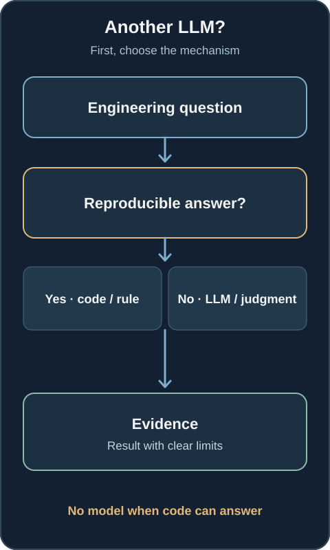
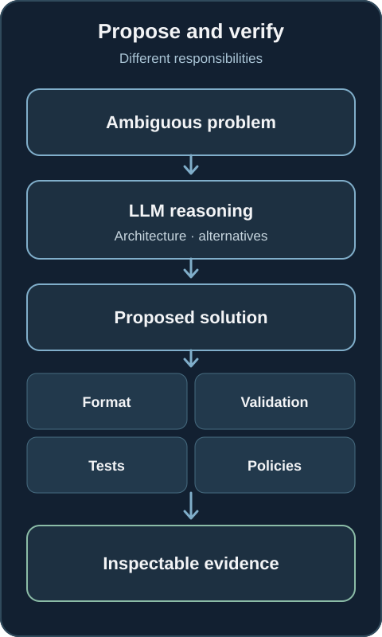
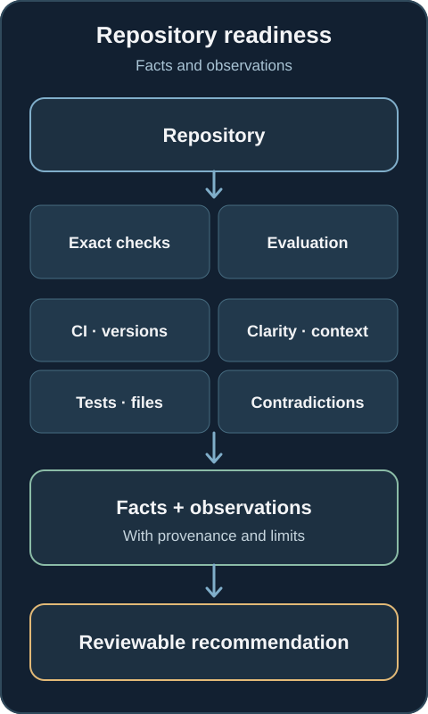
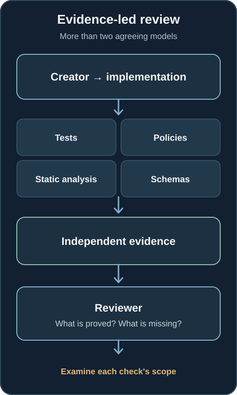
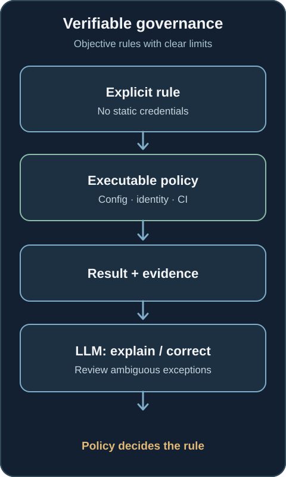
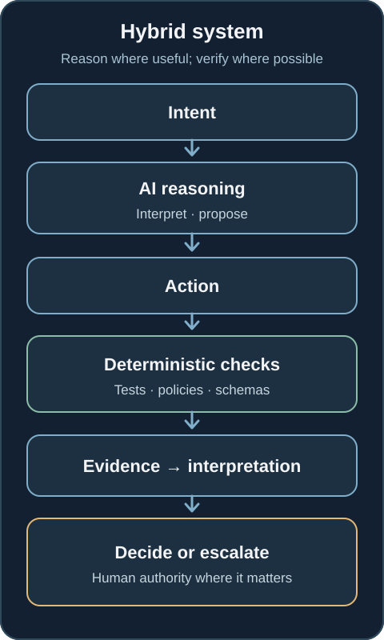

Why doesn't every AI Engineering problem need another LLM?
Models are useful for ambiguity. Tests, policies and conventional software should keep answering questions that have reproducible answers.
As AI enters engineering workflows, a tempting question appears: if an LLM can reason about code, infrastructure, documentation and operations, why not let it validate everything too?
We could ask it whether a file exists, a version is pinned, a pipeline passed, a policy is satisfied or a requirement has evidence. We could even ask another agent to review the first one. Technically, we can. Should we?
One of the most consequential design decisions in AI Engineering is not which model to use. It is which problems should continue to be solved without a model at all.
The problem with turning certainty into probability
Suppose the question is: Does this repository contain SECURITY.md? A file check returns a reproducible yes or no. It does not need interpretation, creativity or inference.
Now ask a model to inspect the repository and decide whether it has a well-defined security policy. That is a different, broader question. If the requirement was only to establish the file's presence, we have replaced an exact check with a probabilistic answer and added tokens, latency, cost, variability and a harder audit trail.
The two questions should not be conflated. The existence of SECURITY.md does not prove that the policy is good. But asking an LLM whether the file exists does not improve the existence check either.

The first question should be: can we determine this result reproducibly without probabilistic reasoning? If so, conventional software usually deserves the job.
Where models add real value
This does not diminish AI. It directs it toward work that needs interpretation: incomplete information, distributed context, documentation synthesis, trade-offs, semantic contradictions, intent and hypotheses.
Consider: Does the proposed architecture fit the availability, cost and tenant-isolation requirements? Requirements, architecture, constraints and context must be related. There may be several defensible answers. A model can surface assumptions, compare alternatives and identify questions for a reviewer.
That output is an assessment, not a proof. It should state what evidence it used, what remains uncertain and which decisions need a person.
The result can still be checked deterministically
An agent may use an LLM to reason about infrastructure architecture, resilience, security and cost. Once it produces Terraform, different tools can verify different properties:
terraform fmt -check → formatting
terraform validate → syntax and internal consistency
tflint → lint rules and provider checks
checkov → configured IaC policies
tests / policy checks → project-specific requirements
These checks do not prove that the architecture is good. In particular, terraform validate does not inspect live provider state. They do produce inspectable evidence for the properties they cover. The distinction between what a check establishes and what it does not is part of the engineering work. The Terraform CLI documentation makes that boundary explicit.

The useful pattern is: AI proposes; software verifies whatever can be verified objectively; people retain authority over consequential judgment.
Reasoning and verification are different responsibilities
An agent need not be just an LLM connected to tools. It can decide which check is relevant, execute the appropriate tool, read the result and decide whether to continue, revise or escalate.
The model might choose a test. The test result should come from the test runner. The model might interpret a policy violation. The policy decision should come from the policy engine when the rule is explicit and machine-checkable.
This separation improves debugging. It lets a reviewer see whether the model made a poor judgment, used the wrong tool, missed a check or correctly reported a failing check. Those are different failure modes.
Repository readiness needs both kinds of evaluation
Imagine assessing whether a repository is ready for agents. An initial standard might require stable instructions, validation commands, pinned critical versions, CI, known ownership, architecture documentation and runnable tests.
Several questions are direct: does the instruction file exist? Is a version pinned? Does CI exist? Can the tests run? Is required configuration present? Code can answer these and retain the result, command and version as evidence.
Other questions need judgment: are the instructions clear enough for this task? Does the architecture documentation contradict the implementation? Is ownership ambiguous? Does the validation strategy match the risk? A model can help examine those questions, provided its observations remain distinguishable from measured facts.

A useful result might look like this:
✓ CI configured fact: workflow found
✓ tests executable fact: command passed
✓ critical versions pinned fact: lockfile checked
△ architecture guidance thin observation: review suggested
! ownership unclear observation: human clarification needed
— security profile not applicable, with a recorded reason
That is more actionable than “yes, the repository looks ready.” It also prevents a numerical readiness score from hiding uncertainty.
Another LLM is not automatically an independent reviewer
A creator model followed by a reviewer model can be useful. The second model may catch a problem the first missed. But agreement between two models is not automatically independent confirmation. They may share training patterns, context or the same mistaken interpretation of a specification.
The reviewer becomes more valuable when it can inspect evidence beyond the creator's reasoning: tests, schemas, static analysis, policy results, runtime checks and source material. It can ask what does the evidence demonstrate? and what remains untested? rather than only do I agree with the first model?

Evidence itself needs scrutiny. A passing test may cover the wrong behavior. A policy rule may have a blind spot. A reviewer should examine the scope of the checks, not treat every green result as complete proof.
Governance should not be probabilistic by default
Take an explicit policy: production workloads must not use static credentials. If the relevant configuration is structured and visible, enforce that rule through policy as code, identity controls, static analysis and deployment checks. An LLM can explain a violation, suggest a correction or investigate an ambiguous exception. It need not become the authority that decides whether the objective rule passes.

Executable policy is easier to repeat and audit, but only within its coverage. Missing configuration, undeclared dependencies and policy gaps still need review. Deterministic enforcement is a foundation for governance, not a guarantee that the entire system is safe.
Deterministic first does not mean deterministic only
Some questions resist a Boolean rule: Is the architecture unnecessarily complex? Do the ADRs explain the trade-offs? Is a change aligned with product intent? What coupling or failure scenario have we overlooked?
Metrics and rules can help, but judgment remains necessary. The principle is deterministic where possible, probabilistic where valuable. A model should consume evidence, identify gaps and help decide what to investigate next, rather than replace evidence with a confident sentence.

The decision boundary is practical. Use conventional software when the question is does it exist, match, pass, satisfy this explicit rule or reproduce? Consider AI when the question is what does it mean, what alternatives exist, what context is missing or what should we investigate next?
One path produces checkable facts. The other produces reasoning. A dependable engineering process needs both and keeps them labeled.
There is a cost and a reliability reason
One model call to check a file can look insignificant. Run it thousands of times across repositories, CI jobs and agents, and the tokens, latency and attention add up. AI FinOps starts with a simple design choice: do not pay for model reasoning where a cheap, reliable check answers the question.
The reliability argument matters even more. A pinned version check should return the same result for the same input. Turning it into a model judgment adds uncertainty where none was required. Models are valuable because they can work under ambiguity; we should not make the unambiguous parts ambiguous for their sake.
Architecture matters more than agent count
A system with a planner, architect, developer, reviewer, security agent and FinOps agent can still be a chain of probabilistic guesses. More agents do not necessarily mean more control.
A stronger pattern connects reasoning → action → deterministic evidence → interpretation → decision or human escalation. The intelligence is distributed across the model, tools, checks, contracts and people. It matters which parts may vary and which must be reproducible.
This connects to a broader question I explored in what happens when agent adoption outpaces governance: agents need standards and capabilities they can consume, plus ways to prove that they applied them. It also complements the discussion of traceable agent delivery: a delivery record is stronger when its evidence comes from independent checks.
Perhaps the most useful agent is one that knows when not to reason from scratch: when to call a tool, run a test, consult an authoritative source, apply a policy, wait for evidence or ask a person.
When designing AI Engineering, a productive question is not only which other agent should we add? It is which part of this problem should not need an LLM at all?